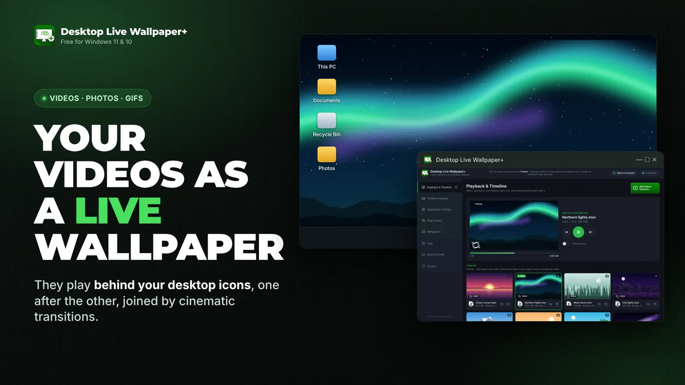

Welcome to the Help Center of Desktop Live Wallpaper+
Here, you will find useful info about the app's usage and a place to discover and download amazing video footage and HD wallpapers for your Windows 11 or Windows 10 PC. You can also easily get in touch with direct support from the development team!
On this first page you will find a short demo of how Desktop Live Wallpaper+ can be used on your Windows desktop, and the list of media file types that the app supports. On the next page you will read about the app's usage, how to set it up for the first time, and some tips when choosing the media files to add to your Desktop Live Wallpaper+ Timeline.
Tip: use the tabs at the top, or the green Next button at the bottom right, to move quickly through the help pages!
Enjoy your stay! – the Mobility in Life Applications team
What is it all about?
Desktop Live Wallpaper+ is our new and innovative way to apply a beautiful live Timeline of your favorite photos and videos directly to your Windows desktop. Your desktop will not be the same again, and your whole Windows system will be more exciting and attractive than before!
You, the user, are the creator and the producer. Simply apply your own media "style" to the Timeline and create a unique, personally amazing live desktop! The app handles all the rest: the media player, the effects, the tools and the resources!

Cinematic transitions
Between every two items the app plays a real video transition – circle reveals, wipes, slides, zooms and fades with slow pan and zoom – like a video editor makes them.
Two ways to control it
Use the app's own window or the same controls in your web browser. Both show the same Timeline and every change is saved right away.
Add with a right-click
Select videos or photos in File Explorer, right-click and choose Add to Desktop Live Wallpaper+. They join your Timeline instantly.
Use case example: how you can use Desktop Live Wallpaper+
Here we provide a very short video captured from our own desktop PC where the app is installed and running. The Timeline of Desktop Live Wallpaper+ contains 5 media elements in a sequence: 3 picture wallpapers (nothing special, just 3 HD wallpapers with the transition effect enabled), 1 animated GIF and a nice waterfall HD video.
Media files? Supported file types
Keep in mind that Desktop Live Wallpaper+ is able to handle and play almost every media file that exists. To be more specific, the app supports:
1Video files
The app can play almost any video file type without limitation. Simply add the video you want to the Timeline and it is displayed in the resolution it was recorded in.
The app plays video files stored on your PC – not links to the web (e.g. YouTube, Vimeo).
2Animated GIFs
The app can display any animated .gif file you want. Again, just add the GIF to the application Timeline and that's it!
3HD photos, pictures, wallpapers
The app can also display any HD photo or picture you have on your PC. It also gives you special web pages where we have collected beautiful video wallpapers and photo wallpapers, organized by category. So don't bother googling around – we have you covered!
In all the above cases, the media files (GIFs, videos or pictures) must be stored locally on your PC. No internet connection is needed for the app to work!
What's next…? First use, setup, usage & tips
That's enough about what Desktop Live Wallpaper+ is and how you can use it to make the look and feel of your PC more exciting. But before the first use, please take a look at some important details about the behavior of the app itself: it plays behind your desktop icons, so you control it from its small start window near the taskbar, from its own app window or your web browser, and from its green icon in the notification area.
Otherwise, if you are familiar with the app and you just want to find videos or wallpapers to download and add to it, go to the web pages we have prepared for this purpose: